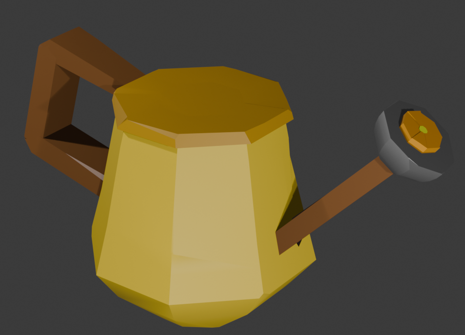
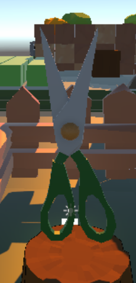
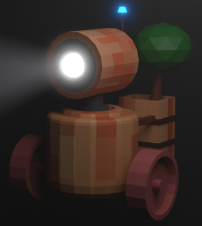

Les Racines Fraternelles
Trailer des Racines Fraternelles
Projet universitaire réalisé entre septembre 2024 et janvier 2025.
Contexte
Ce projet a été réalisé dans le cadre d’un cours de création de jeu vidéo sur >Unity 3D (low poly). Trois thèmes étaient proposés : amitié, fraternité, solitude et sororité. Avec Jules Cespedes et Thomas Simon, nous avons choisi le thème de la fraternité, un sujet qui nous a particulièrement inspirés.
🎮 Gameplay
Notre jeu est en vue isométrique, offrant une perspective de loin sur les différents plateaux. Le joueur doit se déplacer de plateau en plateau, chacun représentant un mini-niveau. Sur chaque plateau, il faut résoudre des énigmes pour ouvrir la porte qui mène au niveau suivant.
 Vue du jeu
Vue du jeu
Pour cela, le joueur peut utiliser divers mécanismes présents sur les plateaux ainsi que des outils qu'il débloquera au fil de l’aventure. En parallèle, il doit collecter les pages du carnet de Liam, qui contiennent des informations variées : des récits du lore, des descriptions de plantes étranges, ainsi que des détails sur les outils et mécanismes.
-  Arrosoir : Permet de faire pousser en très grand des plantes.
-  Cisaille : Permet de couper les hautes herbes.
-
 Gants : Permettent de déplacer des caisses à distance.
Gants : Permettent de déplacer des caisses à distance.
-  Robot : Permet d'accéder à des zones inaccessibles au joueur.
Un aspect important du gameplay est la manipulation de la caméra autour du plateau. Le joueur peut déplacer la caméra pour révéler des éléments cachés derrière des arbres ou d’autres objets, ce qui est essentiel pour trouver la solution aux énigmes et progresser.
🎮 Spitch du jeu
Les Racines Fraternelles est un jeu de puzzle en solo destiné aux jeunes joueurs. Le joueur incarne Owen, un jeune écureuil déterminé à retrouver son frère Liam, disparu dans les vastes jardins où il travaille.
Le gameplay repose sur la résolution d’énigmes et l’exploration. Les joueurs doivent faire preuve d’ingéniosité pour surmonter des obstacles dans une forêt fantastique en 3D.
Galerie d'assets 3D que j'ai réalisé